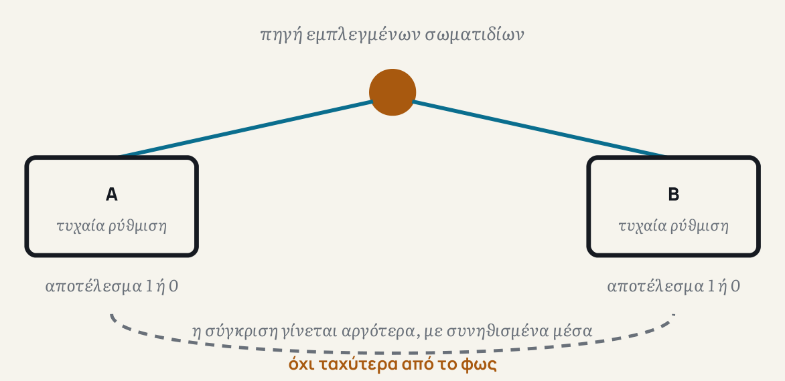

Το 1935, ο Albert Einstein, μαζί με τους Boris Podolsky και Nathan Rosen, δημοσίευσε ένα άρθρο που έθετε ένα πρόβλημα στην τότε νεαρή κβαντική θεωρία. Το πρόβλημα ξεκινούσε από κάτι που ονομάζουμε σήμερα «εμπλοκή» (entanglement): δύο σωματίδια μπορούν να δημιουργηθούν έτσι ώστε να μοιράζονται μια κοινή κατάσταση, ακόμα κι όταν στη συνέχεια απομακρυνθούν πολύ το ένα από το άλλο. Αν μετρήσεις το ένα, μαθαίνεις αμέσως κάτι για το άλλο, όσο μακριά κι αν βρίσκεται.
Στον Einstein αυτό φάνηκε ύποπτο. Αν η μέτρηση στο ένα σωματίδιο επηρεάζει στιγμιαία το άλλο, δεν μοιάζει αυτό με σήμα που ταξιδεύει ταχύτερα από το φως, κάτι που η ίδια η θεωρία της σχετικότητας απαγορεύει; Ονόμασε το φαινόμενο «απόκοσμη δράση από απόσταση» και πίστευε ότι η κβαντική θεωρία ήταν απλώς ελλιπής: ότι κάθε σωματίδιο κουβαλά κρυφές, προκαθορισμένες ιδιότητες από την αρχή, απλώς δεν τις ξέρουμε ακόμα.
Ένα τεστ που μπορεί να δώσει απάντηση
Για τριάντα χρόνια, το ερώτημα έμοιαζε φιλοσοφικό, χωρίς τρόπο να ελεγχθεί πειραματικά. Αυτό άλλαξε το 1964, όταν ο φυσικός John Bell βρήκε κάτι έξυπνο: μια συγκεκριμένη ανισότητα που κάθε θεωρία σαν αυτή που φανταζόταν ο Einstein, όπου τα σωματίδια κουβαλούν κρυφές ιδιότητες και δεν επηρεάζονται από μακρινά γεγονότα, θα έπρεπε να την τηρεί. Αν όμως η κβαντική θεωρία είχε δίκιο, τα εμπλεγμένα σωματίδια θα την παραβίαζαν. Το ερώτημα έγινε πλέον κάτι που μπορούσε να μετρηθεί σε εργαστήριο.
Το πρώτο πείραμα που έδειξε καθαρά την παραβίαση έγινε το 1982, από τον Alain Aspect και τους συνεργάτες του στο Παρίσι. Το αποτέλεσμα ήταν ξεκάθαρο υπέρ της κβαντικής θεωρίας: τα εμπλεγμένα σωματίδια συμπεριφέρονταν με τρόπο που καμία θεωρία «κρυφών ιδιοτήτων», όπως τη φανταζόταν ο Einstein, δεν μπορούσε να εξηγήσει.


Τα «παραθυράκια» και πώς έκλεισαν
Κάθε πείραμα έχει ατέλειες, και τα πρώτα πειράματα Bell άφηναν ανοιχτά κάποια «παραθυράκια»: πιθανότητες να υπάρχει κάποιο κρυφό κόλπο που εξηγεί το αποτέλεσμα χωρίς πραγματική εμπλοκή. Ένα τέτοιο παραθυράκι αφορά το αν η επιλογή του πώς θα μετρήσει κάθε ανιχνευτής είναι πραγματικά τυχαία, ή μήπως έχει επηρεαστεί από κάτι κοινό στο παρελθόν των δύο σωματιδίων.
Οι φυσικοί έκλεισαν αυτό το παραθυράκι με έναν εντυπωσιακό τρόπο: αντί να αφήσουν έναν υπολογιστή να επιλέξει τυχαία τη ρύθμιση κάθε ανιχνευτή, χρησιμοποίησαν το φως αρχαίων αστεριών, ακόμα και quasars δισεκατομμυρίων ετών φωτός μακριά. Επειδή αυτό το φως ξεκίνησε το ταξίδι του πολύ πριν φτιαχτεί το πείραμα, όποια κρυφή σύνδεση θα έπρεπε να υπάρχει θα έπρεπε να χρονολογείται από πριν καν υπάρξει η Γη. Μια τέτοια «κοσμική δοκιμή Bell», το 2018, χρησιμοποίησε φως από quasars και απέκλεισε κάθε τέτοια κρυφή σύνδεση για το 96% της ιστορίας του σύμπαντος.
Aspect et al., 1982: πρώτο καθαρό πείραμα υπέρ της κβαντικής θεωρίας. Κοσμική δοκιμή Bell, 2018: χρήση φωτός από μακρινά quasars για την επιλογή ρυθμίσεων, με παραβίαση της ανισότητας κατά 9,3 τυπικές αποκλίσεις.
Τι δεν σημαίνει
Είναι σημαντικό να ξεκαθαρίσουμε τι δεν αποδεικνύει όλο αυτό. Δεν σημαίνει ότι μπορείς να στείλεις μήνυμα ταχύτερα από το φως. Κάθε μεμονωμένη μέτρηση δίνει τυχαίο αποτέλεσμα. Η παράξενη συσχέτιση φαίνεται μόνο όταν οι δύο πλευρές συγκρίνουν τις καταγραφές τους αργότερα, και αυτή η σύγκριση γίνεται με συνηθισμένα μέσα, ραδιοκύματα ή ένα τηλέφωνο, όχι ταχύτερα από το φως. Έτσι δεν παραβιάζεται η σχετικότητα, αν και ο τρόπος που τα δύο σωματίδια «συνεννοούνται» παραμένει, με κάθε έννοια της λέξης, παράξενος.
Το θεώρημα του Bell αποκλείει τις τοπικές θεωρίες κρυφών ιδιοτήτων, όχι κάθε δυνατή εξήγηση. Οι φυσικοί διαφωνούν ακόμα για το πώς ακριβώς πρέπει να «διαβάζουμε» φιλοσοφικά αυτό το αποτέλεσμα, και δεν υπάρχει ένα πείραμα που να έχει αποδείξει ποια ερμηνεία της κβαντικής θεωρίας είναι η σωστή.
Μια πρακτική χρήση
Το φαινόμενο δεν έμεινε μόνο θεωρητικό ενδιαφέρον. Χρησιμοποιείται σήμερα για να φτιάχνονται κλειδιά κρυπτογράφησης εξαιρετικά δύσκολα να υποκλαπούν: αν κάποιος τρίτος προσπαθήσει να «κρυφακούσει» τα εμπλεγμένα σωματίδια, η ίδια η μέτρησή του διαταράσσει τη συσχέτισή τους με τρόπο που μπορεί να ανιχνευθεί. Έτσι, η ίδια η φυσική εγγυάται την ασφάλεια, όχι απλώς το πόσο δύσκολος είναι ένας μαθηματικός υπολογισμός.
Στο πρώτο τεύχος είδαμε ότι δεν υπάρχει ένα κοινό «τώρα» για όλο το σύμπαν. Εδώ βλέπουμε κάτι παράλληλο: το «εδώ» δεν είναι απολύτως κλειστό. Δύο σημεία μπορεί να συνδέονται με τρόπο που δεν εξηγείται από όσα συμβαίνουν στο καθένα ξεχωριστά. Ταυτόχρονα, τίποτα από αυτά δεν καταργεί την αρχή ότι καμία πληροφορία δεν ταξιδεύει ταχύτερα από το φως. Το σύμπαν, φαίνεται, βρίσκει τρόπο να είναι και τοπικό και συνδεδεμένο.
Αν το «εδώ» δεν είναι ένα εντελώς κλειστό σύνολο ιδιοτήτων, τι ακριβώς είναι αυτό που βρίσκεται κάπου;
Πηγές και περαιτέρω ανάγνωση
- A. Einstein, B. Podolsky, N. Rosen, «Can Quantum-Mechanical Description of Physical Reality Be Considered Complete?», Physical Review 47, 777 (1935)
- A. Aspect, J. Dalibard, G. Roger, «Experimental Test of Bell's Inequalities Using Time-Varying Analyzers», Physical Review Letters 49, 1804 (1982)
- J. Handsteiner et al., «Cosmic Bell Test: Measurement Settings from Milky Way Stars», Physical Review Letters 118, 060401 (2017)
- D. Rauch et al., «Cosmic Bell Test Using Random Measurement Settings from High-Redshift Quasars», Physical Review Letters 121, 080403 (2018)
- The Nobel Prize in Physics 2022, δελτίο Τύπου
- QNu Labs, «BB84 Protocol» — πρακτικές εφαρμογές κβαντικής κρυπτογράφησης
- Stanford Encyclopedia of Philosophy, «Bell's Theorem»